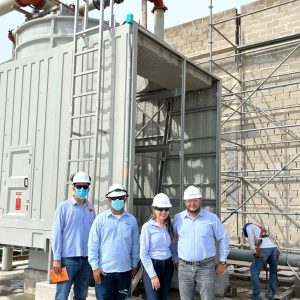
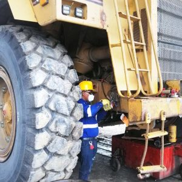
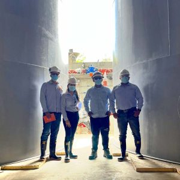
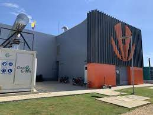
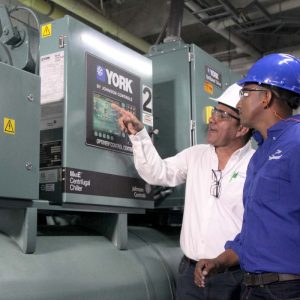

Indice
- Empresa Serviparamo sas
- Unidad de negocio: Servicios
- Unidad de negocio: Proyectos
- Unidad de negocio: Energia
- Experiencia
- Contactos
Empresa Serviparamo sas
Somos una empresa líder en el sector del aire acondicionado, ventilación mecánica, automatización y control, mantenimiento, retrofit, asesoría y soluciones para garantizar calidad de aire interior, renting, soluciones energéticas, diseño y pioneros en nuestro País en la construcción de Distritos Térmicos habiendo logrado establecer estos sistemas de climatización dentro de nuestra sociedad.
Combinamos tecnología e ingeniería con experiencia financiera para entregar a nuestros clientes soluciones de vanguardia en proyectos y servicios de alta eficiencia y ahorro energético, siendo entes transformadores comprometidos con el medio ambiente.

Unidad de negocio: Servicios
Realizamos mantenimiento a los sistemas de aire acondicionado a flotas de equipos pesados: Over Haul de camiones de bajo perfil (scoops), Jumbos, camiones cargadores articulados, grúas, perforadoras.
Mantenimiento preventivo para estabilizar los sistemas de aire acondicionados de los equipos mineros al 100% de su operatividad.
Limpieza milimétrica con productos de alta calidad y especializados, reparamos y/o cambiamos componentes si es necesario.
Desmontamos e Instalamos nuevamente el sistema y realizamos pruebas minuciosas para verificar su rendimiento.

Unidad de negocio: Proyectos
A través del desarrollo de ingeniería, realizamos proyectos a la medida de sus necesidades.
Contamos con un equipo de ingenieros experimentados para producir soluciones acorde a las expectativas de nuestros clientes.
Desarrollamos proyectos para el sector industrial, salud, educativo, comunicaciones, hotelero, grandes superficies con énfasis en control de temperatura, humedad, automatización de los sistemas, calidad de aire interior, eficiencia energética.
Suministramos e instalamos sistemas HVAC para atender el sector residencial y comercio ligero.

Unidad de negocio: Energia
Serviparamo, busca por medio de soluciones energéticas optimizar el consumo de energía eléctrica, vapor/calor y frío, reduciendo los costos de operación de nuestros clientes y generando una mayor competitividad en el mercado.
Los distritos de energía son sinónimo de auto sostenibilidad, rentabilidad y cuidado con el medioambiente y un vehículo que permite el crecimiento de las urbes y sus necesidades de desarrollo.

Experiencia
A través del desarrollo de ingeniería, realizamos proyectos a la medida de sus necesidades.
Desde 1974 estamos combinando tecnología e ingeniería para entregar a nuestros clientes soluciones de alta eficiencia.

Bienvenido al centro de contacto de Serviparamo.
Conoce todos los canales de atención que tenemos disponibles para poder brindarte un servicio oportuno y de calidad.
Línea Nacional
Atención y diagnóstico 24h
Whatsapp
+57 3106-803-290
Soporte
Atención al cliente